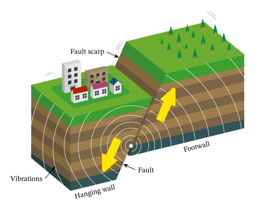
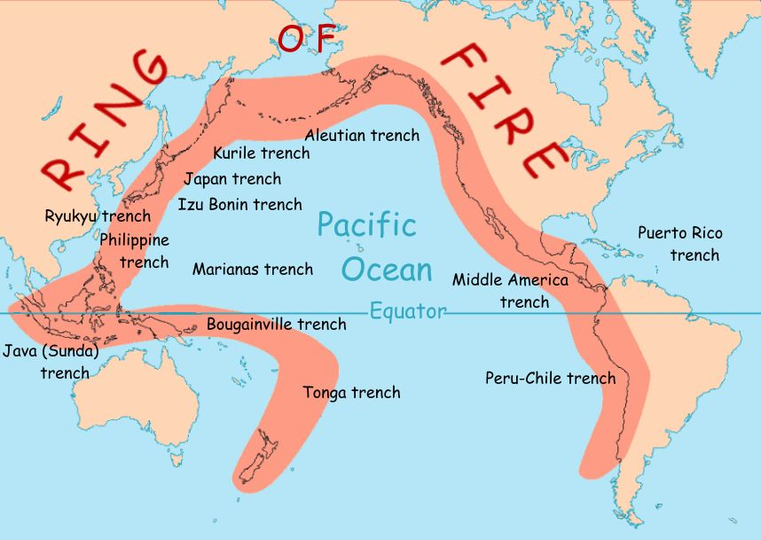

Above: A diagram demonstrating how a tectonic earthquake is generated along a fault and how the vibrations travel through Earth's crust.
Below: The Pacific Ring of Fire. It stretches from Southern America, up around the west coast of North America, along the Bering Strait, down into Japan and Aotearoa (New Zealand).

What is an Earthquake?
An earthquake is the shaking of the Earth's surface due to energy being released into the ground.
Earthquakes are most often caused by the natural shifting forces of the tectonic plates that make up the Earth's crust. The strength of an earthquake can vary widely. Small ones being hardly, if at all, noticeable, and big ones being natural disasters that can destroy and harm many.
Different areas have different amounts of seismic activity, which is defined as the amount, type, and size of earthquakes in a certain time. The tectonic plates build up the pressure where earthquakes come from in places known as faults. Depending where the earthquake affects, it may cause additional disasters such as landslides and tsunamis. Buildings need to be built to standards that are set to keep them from getting destroyed. It is more likely to find proper infrastructure in places where earthquakes are most common but when they strike elsewhere, there is more devistating loss. Especially with aftershocks, which can effect far away from the faults.
The Ring of Fire is an area surrounding the pacific ocean that has increased seismic activity, volcanoes, and earthquakes. The Ring of Fire is responsible for about 90% of all earthquakes. Also 75% of Earth's active volcanoes are located along the ring. The ring is about 40,000 kilometers or 25,000 miles long.